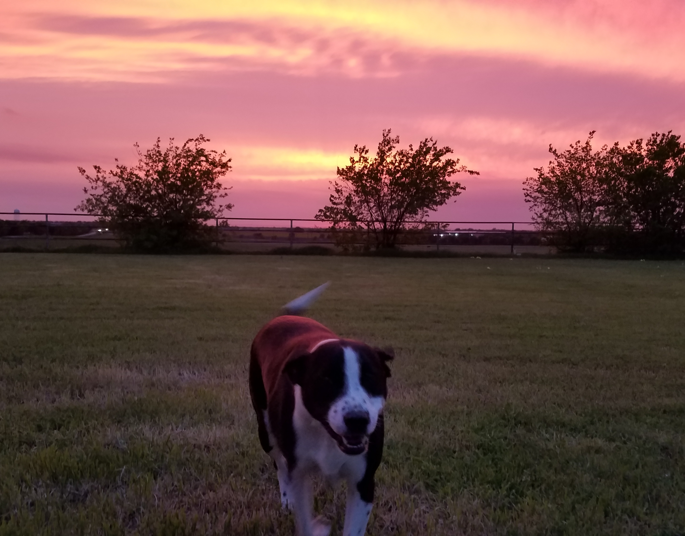

About Me
First, the most important thing you have to know about me is
this: I have the very good fortune of being the owner of a grade-A, #1, top-notch pup, the world's very
goodest good boy, DIGGLE THE WONDER DOG. I don't suppose anything else really matters after that. I'd
stop right here for the sake of brevity, but will continue for the sake of my grade.
I suppose I should also inform you that I had educational FOMO before that was even a thing. I
participated in no fewer than 6 sports in high school (it was a small school). Meantime, I was
also involved in about four academic UIL competitions, One Act Play, Technology Students Association,
National Honor Society, and
Student Council (like, really small school).
In college I was first an international studies major with a concentration in Russian, before I switched
to Theater Arts. After graduation I pursued a M.S. in Sport Physiology. Over the course of my time at
Texas
A&M I worked as a theater shop supervisor, and then as an undergraduate research assistant in the Bone
Biology Lab (random side note: rat tibias are annoyingly tiny, and the safety measures in college labs
regarding liquid nitrogen are alarmingly lax). For fun I joined the Rowing club for a semester,
volunteer coached
a local home school basketball team for 3 years, and was a member of the Aggie Angels - the men's
basketball support club - for my final undergrad year.
Long story short, I love learning. Like really love learning. And I'm so grateful for this
bootcamp opportunity.